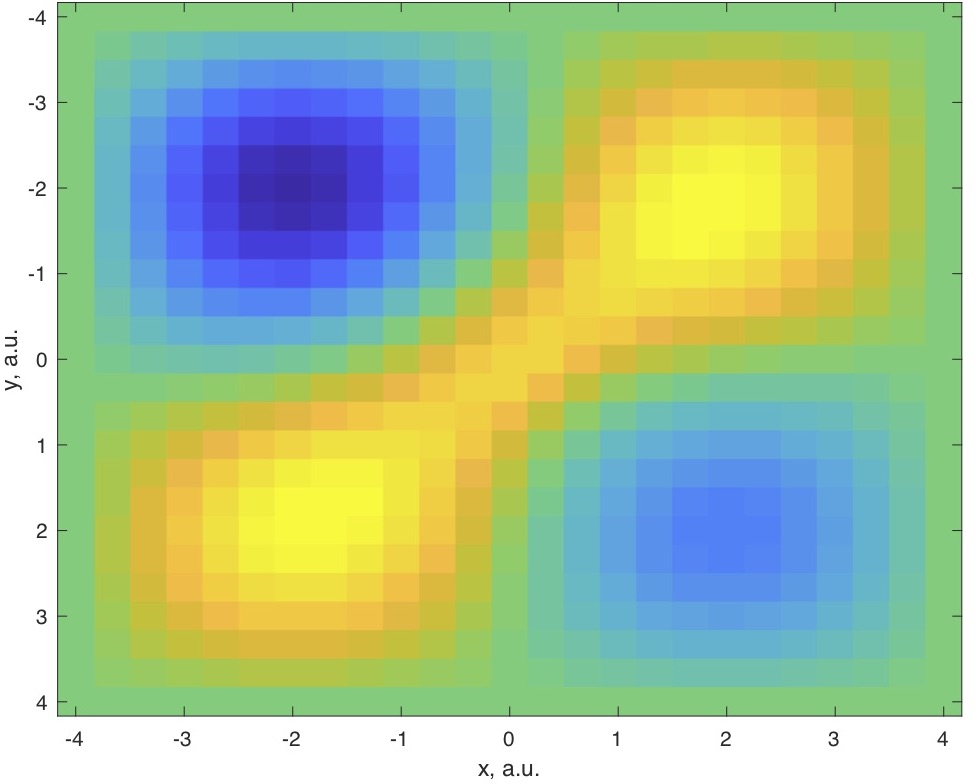
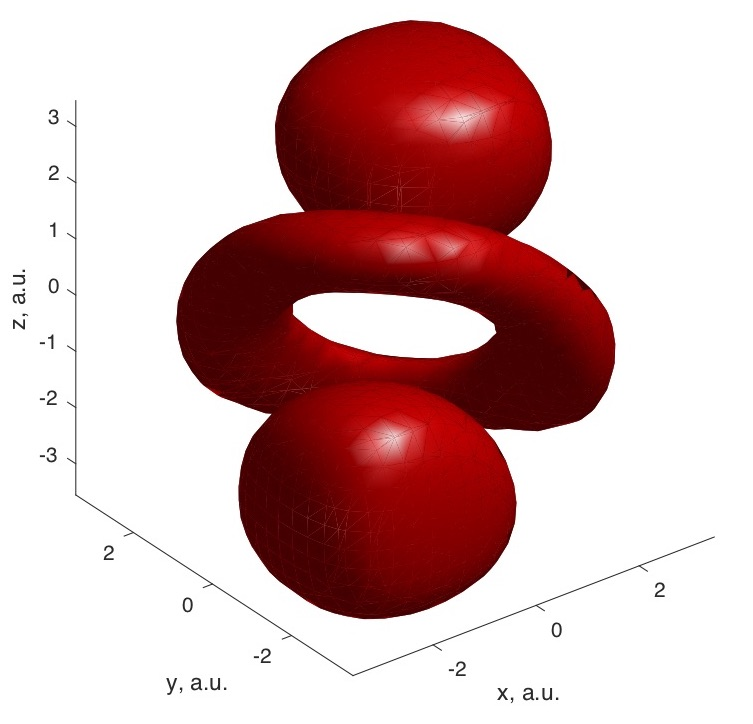

Hey everyone! Welcome to Zestymath! We want to make science fun, accessible, and free for everyone. The content of this website will mainly consist of math and physics content, and you’re all welcome to request content relevant to math, physics, and even engineering/computer science topics. There will be continuous updates for adding new material, and editing expositions of old material. We really enjoy writing educational resources for you all, and hope you have fun learning, can pass it on to your peers, whether you’re in high school, university, or a self-motivated learner.
Here in these figures, we have some figures representing an approximate d-orbital wave-function of helium calculated by a Hartree-Fock self-consistent-field approach.
 